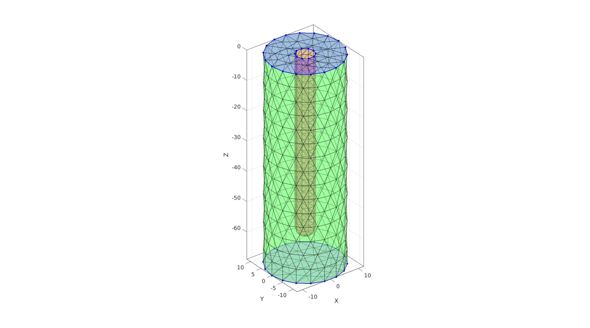
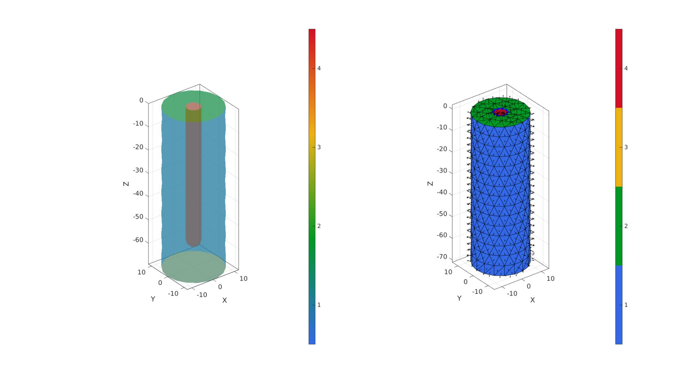

DEMO_febio_0056_cylinder_embedded_probe_02
Below is a demonstration for:
- Building geometry for a tissue segment with an embedded probe
- Defining the boundary conditions
- Coding the febio structure
- Running the model
- Importing and visualizing the displacement results
Contents
- Keywords
- Control parameters
- Build probe
- Build gel
- Cap ends
- Merge model components
- Mesh solid using tetgen
- Joining node sets
- Plotting tissue and probe meshes
- Define boundary condition node sets
- Create contact surfaces
- Defining the FEBio input structure
- Quick viewing of the FEBio input file structure
- Exporting the FEBio input file
- Running the FEBio analysis
- Import FEBio results
Keywords
- febio_spec version 2.5
- febio, FEBio
- probe
- contact, sliding, friction
- rigid body constraints
- tetrahedral elements, tet4
- triangular elements, tri3
- static, solid
- hyperelastic, Ogden
- displacement logfile
- stress logfile
clear; close all; clc;
Plot settings
fontSize=15;
faceAlpha=1;
lineWidth1=1.5;
lineWidth2=3;
markerSize1=15;
markerSize2=30;
edgeWidth=2;
edgeColor='k';
faceAlpha1=1;
Control parameters
% Path names defaultFolder = fileparts(fileparts(mfilename('fullpath'))); savePath=fullfile(defaultFolder,'data','temp'); % Defining file names febioFebFileNamePart='tempModel'; febioFebFileName=fullfile(savePath,[febioFebFileNamePart,'.feb']); %FEB file name febioLogFileName=fullfile(savePath,[febioFebFileNamePart,'.txt']); %FEBio log file name febioLogFileName_disp=[febioFebFileNamePart,'_disp_out.txt']; %Log file name for exporting displacement febioLogFileName_force=[febioFebFileNamePart,'_force_out.txt']; %Log file name for exporting force febioLogFileName_strainEnergy=[febioFebFileNamePart,'_energy_out.txt']; %Log file name for exporting strain energy density febioLogFileName_strain=[febioFebFileNamePart,'_strain_out.txt']; %Log file name for exporting strain febioLogFileName_stress=[febioFebFileNamePart,'_stress_out.txt']; %Log file name for exporting strain %Geometric parameters probeHeight=60; probeRadius=3; % The radius of the hemi-spher portion nRefine=0; % Number of |subtri| refinements for icosahedron pointSpacingFactorTissue=2; dAdd=3*probeRadius; tissueRadius=probeRadius+dAdd; tissueHeight=probeHeight+dAdd; volumeFactor=1; % Motion timing parameters motionFrequency=2; %Motion frequency cycleTime=1./motionFrequency; numMotionCycles=8; %Number of motion cycles timeTotal=cycleTime.*numMotionCycles; %Total simulation time displacementMagnitude=-1; %displacement magnitude t_load_curve=(0:cycleTime/200:timeTotal)'; a_load_curve=0.5+(0.5*sin((t_load_curve-cycleTime/4)*2*pi.*motionFrequency)); timeSetMustPoints=(0:cycleTime/2:timeTotal)'; %Material parameter set formulationType=2; %Elastic=1 Visco=2 c1=1e-3; %Shear-modulus-like parameter m1=2; %Material parameter setting degree of non-linearity k_factor=1e2; %Bulk modulus factor k=c1*k_factor; %Bulk modulus g1=0.8; %Viscoelastic QLV proportional coefficient t1=1; %Viscoelastic QLV time coefficient d=1e-9; %Density (not required for static analysis) % FEA control settings analysisType='dynamic'; numTimeSteps=numMotionCycles.*15; %Number of time steps desired max_refs=25; %Max reforms max_ups=0; %Set to zero to use full-Newton iterations opt_iter=8; %Optimum number of iterations max_retries=6; %Maximum number of retires dtmin=(timeTotal/numTimeSteps)/100; %Minimum time step size dtmax=timeTotal/numTimeSteps; %Maximum time step size symmetric_stiffness=0; min_residual=1e-20; runMode='external'; %'internal' or 'external'; %Contact parameters contactPenalty=10; % Start low, study penetration, increase if needed e.g. 0.1->1->10... laugon=0; minaug=1; maxaug=10; fric_coeff=0.1; contactType=2; %1=sticky, 2=sliding-elastic
Visualize load curve
cFigure; hold on; title('Time curve') xlabel('Time (s)'); ylabel('Displacement (mm)'); for q=1:1:numel(timeSetMustPoints) h1=plot(timeSetMustPoints(q*ones(2,1)),[0 displacementMagnitude],'r-','LineWidth', 1); end h2=plot(t_load_curve,a_load_curve.*displacementMagnitude,'b.-','MarkerSize',15,'LineWidth',2); legend([h1 h2],{'Must points','Load curve'},'Location','SouthOutside'); grid on; box on; axis tight; set(gca,'FontSize',fontSize); drawnow;

Build probe
probeMeshInputStruct.sphereRadius=probeRadius;% => The radius of the hemi-spher portion probeMeshInputStruct.nRefine=nRefine;% => Number of |subtri| refinements for icosahedron probeMeshInputStruct.cylinderHeight=probeHeight-probeRadius;% => height of the cylinder part probeMeshInputStruct.cylinderStepSize=[];% => Aproximate node spacing for cylinder portion probeMeshInputStruct.patchType='tri_slash'; [Fp,Vp,Cp]=hemiSphereCylMesh(probeMeshInputStruct); Fp=fliplr(Fp); %Invert face orientation Vp(:,3)=Vp(:,3)-max(Vp(:,3)); %Get top curve Eb=patchBoundary(Fp,Vp); indProbeTop=edgeListToCurve(Eb); indProbeTop=indProbeTop(1:end-1); Vst=Vp(indProbeTop,:); pointSpacingProbe=mean(patchEdgeLengths(Fp,Vp));
cFigure; hold on; gpatch(Fp,Vp,'gw','k'); plotV(Vst,'b.-','lineWidth',lineWidth1,'MarkerSize',markerSize1); patchNormPlot(Fp,Vp); axisGeom(gca,fontSize); drawnow;

Build gel
pointSpacing=pointSpacingProbe.*pointSpacingFactorTissue; %Sketching profile ns=150; t=linspace(0,2*pi,ns); t=t(1:end-1); x=tissueRadius*cos(t); y=tissueRadius*sin(t); z=zeros(size(x)); Vc=[x(:) y(:) z(:)]; np=ceil(max(pathLength(Vc))./pointSpacing); [Vc]=evenlySampleCurve(Vc,np,'pchip',1); % Extruding model cPar.numSteps=round(tissueHeight/pointSpacing); cPar.depth=tissueHeight; cPar.patchType='tri'; cPar.dir=-1; cPar.closeLoopOpt=1; [Fg,Vg]=polyExtrude(Vc,cPar); Fg=fliplr(Fg); Vgb=Vg(cPar.numSteps:cPar.numSteps:end,:); Vgt=Vg(1:cPar.numSteps:end,:);
Cap ends
regionCell={Vgt(:,[1 2]),Vst(:,[1 2])};
[Ft,Vt]=regionTriMesh2D(regionCell,pointSpacing,0,0);
Vt(:,3)=mean(Vgt(:,3));
regionCell={Vgb(:,[1 2])};
[Fb,Vb]=regionTriMesh2D(regionCell,pointSpacing,0,0);
Fb=fliplr(Fb); %flip face orientation
Vb(:,3)=mean(Vgb(:,3));
Visualize
cFigure; hold on; gpatch(Fp,Vp,'rw','k',0.5); gpatch(Fg,Vg,'gw','k',0.5); gpatch(Fb,Vb,'bw','k',0.5); gpatch(Ft,Vt,'bw','k',0.5); plotV(Vgb,'b.-','lineWidth',lineWidth1,'MarkerSize',markerSize1); plotV(Vgt,'b.-','lineWidth',lineWidth1,'MarkerSize',markerSize1); plotV(Vst,'b.-','lineWidth',lineWidth1,'MarkerSize',markerSize1); axisGeom(gca,fontSize); drawnow;
Merge model components
[F,V,C]=joinElementSets({Fg,Ft,Fb,Fp},{Vg,Vt,Vb,Vp});
[F,V]=mergeVertices(F,V);
cFigure; subplot(1,2,1); hold on; gpatch(F,V,C,'none',0.5); axisGeom(gca,fontSize); colormap gjet; icolorbar; subplot(1,2,2); hold on; gpatch(F,V,C); patchNormPlot(F,V,2); plotV(Vst,'b.-','lineWidth',lineWidth1,'MarkerSize',markerSize1); axisGeom(gca,fontSize); colormap gjet; icolorbar; drawnow;
Mesh solid using tetgen
Create tetgen meshing input structure
[regionA]=tetVolMeanEst(Fg,Vg); %Volume for a regular tet based on edge lengths V_inner=getInnerPoint(F,V); %Interior point for region inputStruct.stringOpt='-pq1.2AaY'; inputStruct.Faces=F; inputStruct.Nodes=V; inputStruct.holePoints=[]; inputStruct.faceBoundaryMarker=C; %Face boundary markers inputStruct.regionPoints=V_inner; %region points inputStruct.regionA=regionA*volumeFactor; %Desired volume for tets inputStruct.minRegionMarker=2; %Minimum region marker
Mesh model using tetrahedral elements using tetGen
[meshOutput]=runTetGen(inputStruct); %Run tetGen
%%%%%%%%%%%%%%%%%%%%%%%%%%%%%%%%%%%%%%%%%%%%% --- TETGEN Tetrahedral meshing --- 24-Sep-2020 16:56:14 %%%%%%%%%%%%%%%%%%%%%%%%%%%%%%%%%%%%%%%%%%%%% --- Writing SMESH file --- 24-Sep-2020 16:56:14 ----> Adding node field ----> Adding facet field ----> Adding holes specification ----> Adding region specification --- Done --- 24-Sep-2020 16:56:14 --- Running TetGen to mesh input boundary--- 24-Sep-2020 16:56:14 Opening /mnt/data/MATLAB/GIBBON/data/temp/temp.smesh. Delaunizing vertices... Delaunay seconds: 0.044289 Creating surface mesh ... Surface mesh seconds: 0.001612 Recovering boundaries... Boundary recovery seconds: 0.003141 Removing exterior tetrahedra ... Spreading region attributes. Exterior tets removal seconds: 0.00071 Recovering Delaunayness... Delaunay recovery seconds: 0.006846 Refining mesh... Refinement seconds: 0.032465 Optimizing mesh... Optimization seconds: 0.001204 Writing /mnt/data/MATLAB/GIBBON/data/temp/temp.1.node. Writing /mnt/data/MATLAB/GIBBON/data/temp/temp.1.ele. Writing /mnt/data/MATLAB/GIBBON/data/temp/temp.1.face. Writing /mnt/data/MATLAB/GIBBON/data/temp/temp.1.edge. Output seconds: 0.013854 Total running seconds: 0.104242 Statistics: Input points: 652 Input facets: 1300 Input segments: 1950 Input holes: 0 Input regions: 1 Mesh points: 1199 Mesh tetrahedra: 5627 Mesh faces: 11904 Mesh faces on exterior boundary: 1300 Mesh faces on input facets: 1300 Mesh edges on input segments: 1950 Steiner points inside domain: 547 --- Done --- 24-Sep-2020 16:56:14 %%%%%%%%%%%%%%%%%%%%%%%%%%%%%%%%%%%%%%%%%%%%% --- Importing TetGen files --- 24-Sep-2020 16:56:14 --- Done --- 24-Sep-2020 16:56:15
Visualize mesh
meshView(meshOutput);

Access model element and patch data
F=meshOutput.faces; V=meshOutput.nodes; C=meshOutput.faceMaterialID; E=meshOutput.elements; elementMaterialID=meshOutput.elementMaterialID; Fb=meshOutput.facesBoundary; Cb=meshOutput.boundaryMarker;
Joining node sets
Fp=Fp+size(V,1); V=[V; Vp]; center_of_mass_probe=mean(Vp,1);
Plotting tissue and probe meshes
cFigure; hold on; gpatch(Fb,V,'bw','none',0.5); gpatch(Fp,V,'rw','r',1); axisGeom(gca,fontSize); camlight headlight; drawnow;

Define boundary condition node sets
logicRigid= Cb==1 | Cb==3; bcSupportList=Fb(logicRigid,:); bcSupportList=unique(bcSupportList(:));
Visualize boundary conditions
cFigure; hold on; gpatch(Fb,V,'kw','none',0.25); hp(1)=plotV(V(bcSupportList,:),'k.','lineWidth',lineWidth1,'MarkerSize',markerSize1); hp(2)=gpatch(Fp,V,'rw','k',1); legend(hp,{'BC Full support','Rigid body with prescribed displacement'}); axisGeom(gca,fontSize); drawnow;

Create contact surfaces
F_contact_slave=fliplr(Fb(Cb==4,:)); F_contact_master=fliplr(Fp);
Visualize contact surfaces
cFigure; subplot(1,2,1); hold on; title('Contact set: Master','FontSize',fontSize); gpatch(F_contact_master,V,'gw','k',1); patchNormPlot(F_contact_master,V); axisGeom(gca,fontSize); camlight headlight; subplot(1,2,2); hold on; title('Contact set: Slave','FontSize',fontSize); gpatch(Fb,V,'kw','none',0.25); gpatch(F_contact_slave,V,'bw','k',1); patchNormPlot(F_contact_slave,V); axisGeom(gca,fontSize); camlight headlight; drawnow;

Defining the FEBio input structure
See also febioStructTemplate and febioStruct2xml and the FEBio user manual.
%Get a template with default settings [febio_spec]=febioStructTemplate; %febio_spec version febio_spec.ATTR.version='2.5'; %Module section febio_spec.Module.ATTR.type='solid'; febio_spec.Control.time_stepper=rmfield(febio_spec.Control.time_stepper,'dtmax'); %Create control structure for use by all steps febio_spec.Control.analysis.ATTR.type=analysisType; febio_spec.Control.time_steps=numTimeSteps; febio_spec.Control.step_size=timeTotal./numTimeSteps; febio_spec.Control.time_stepper.dtmin=dtmin; febio_spec.Control.time_stepper.dtmax.VAL=dtmax; febio_spec.Control.time_stepper.dtmax.ATTR.lc=2; febio_spec.Control.time_stepper.max_retries=max_retries; febio_spec.Control.time_stepper.opt_iter=opt_iter; febio_spec.Control.max_refs=max_refs; febio_spec.Control.max_ups=max_ups; febio_spec.Control.symmetric_stiffness=symmetric_stiffness; febio_spec.Control.min_residual=min_residual; %Material section switch formulationType case 1 %Elastic febio_spec.Material.material{1}.ATTR.type='Ogden'; febio_spec.Material.material{1}.ATTR.id=1; febio_spec.Material.material{1}.c1=c1; febio_spec.Material.material{1}.m1=m1; febio_spec.Material.material{1}.k=k; % febio_spec.Material.material{1}.ATTR.type='neo-Hookean'; % febio_spec.Material.material{1}.ATTR.id=1; % febio_spec.Material.material{1}.E=E_youngs1; % febio_spec.Material.material{1}.v=nu1; case 2 %Elastic %Elastic part febio_spec.Material.material{1}.elastic{1}.ATTR.type='Ogden'; febio_spec.Material.material{1}.elastic{1}.c1=c1; febio_spec.Material.material{1}.elastic{1}.m1=m1; febio_spec.Material.material{1}.elastic{1}.k=k; febio_spec.Material.material{1}.elastic{1}.density=d; %Viscoelastic part febio_spec.Material.material{1}.ATTR.type='uncoupled viscoelastic'; febio_spec.Material.material{1}.ATTR.Name='Block_material'; febio_spec.Material.material{1}.ATTR.id=1; febio_spec.Material.material{1}.g1=g1; febio_spec.Material.material{1}.t1=t1; febio_spec.Material.material{1}.density=d; end febio_spec.Material.material{2}.ATTR.type='rigid body'; febio_spec.Material.material{2}.ATTR.id=2; febio_spec.Material.material{2}.density=1; febio_spec.Material.material{2}.center_of_mass=center_of_mass_probe; %Geometry section % -> Nodes febio_spec.Geometry.Nodes{1}.ATTR.name='nodeSet_all'; %The node set name febio_spec.Geometry.Nodes{1}.node.ATTR.id=(1:size(V,1))'; %The node id's febio_spec.Geometry.Nodes{1}.node.VAL=V; %The nodel coordinates % -> Surfaces febio_spec.Geometry.Surface{1}.ATTR.name='contact_master'; febio_spec.Geometry.Surface{1}.tri3.ATTR.lid=(1:1:size(F_contact_master,1))'; febio_spec.Geometry.Surface{1}.tri3.VAL=F_contact_master; febio_spec.Geometry.Surface{2}.ATTR.name='contact_slave'; febio_spec.Geometry.Surface{2}.tri3.ATTR.lid=(1:1:size(F_contact_slave,1))'; febio_spec.Geometry.Surface{2}.tri3.VAL=F_contact_slave; % -> Surface pairs febio_spec.Geometry.SurfacePair{1}.ATTR.name='Contact1'; febio_spec.Geometry.SurfacePair{1}.master.ATTR.surface=febio_spec.Geometry.Surface{1}.ATTR.name; febio_spec.Geometry.SurfacePair{1}.slave.ATTR.surface=febio_spec.Geometry.Surface{2}.ATTR.name; % -> Elements febio_spec.Geometry.Elements{1}.ATTR.type='tet4'; %Element type of this set febio_spec.Geometry.Elements{1}.ATTR.mat=1; %material index for this set febio_spec.Geometry.Elements{1}.ATTR.name='Tissue'; %Name of the element set febio_spec.Geometry.Elements{1}.elem.ATTR.id=(1:1:size(E,1))'; %Element id's febio_spec.Geometry.Elements{1}.elem.VAL=E; febio_spec.Geometry.Elements{2}.ATTR.type='tri3'; %Element type of this set febio_spec.Geometry.Elements{2}.ATTR.mat=2; %material index for this set febio_spec.Geometry.Elements{2}.ATTR.name='Probe'; %Name of the element set febio_spec.Geometry.Elements{2}.elem.ATTR.id=size(E,1)+(1:1:size(Fp,1))'; %Element id's febio_spec.Geometry.Elements{2}.elem.VAL=Fp; % -> NodeSets febio_spec.Geometry.NodeSet{1}.ATTR.name='bcSupportList'; febio_spec.Geometry.NodeSet{1}.node.ATTR.id=bcSupportList(:); %Boundary condition section % -> Fix boundary conditions febio_spec.Boundary.fix{1}.ATTR.bc='x'; febio_spec.Boundary.fix{1}.ATTR.node_set=febio_spec.Geometry.NodeSet{1}.ATTR.name; febio_spec.Boundary.fix{2}.ATTR.bc='y'; febio_spec.Boundary.fix{2}.ATTR.node_set=febio_spec.Geometry.NodeSet{1}.ATTR.name; febio_spec.Boundary.fix{3}.ATTR.bc='z'; febio_spec.Boundary.fix{3}.ATTR.node_set=febio_spec.Geometry.NodeSet{1}.ATTR.name; % -> Prescribed boundary conditions on the rigid body febio_spec.Boundary.rigid_body{1}.ATTR.mat=2; febio_spec.Boundary.rigid_body{1}.fixed{1}.ATTR.bc='y'; febio_spec.Boundary.rigid_body{1}.fixed{2}.ATTR.bc='z'; febio_spec.Boundary.rigid_body{1}.fixed{3}.ATTR.bc='Rx'; febio_spec.Boundary.rigid_body{1}.fixed{4}.ATTR.bc='Ry'; febio_spec.Boundary.rigid_body{1}.fixed{5}.ATTR.bc='Rz'; febio_spec.Boundary.rigid_body{1}.prescribed.ATTR.bc='x'; febio_spec.Boundary.rigid_body{1}.prescribed.ATTR.lc=1; febio_spec.Boundary.rigid_body{1}.prescribed.VAL=displacementMagnitude; %LoadData section febio_spec.LoadData.loadcurve{1}.ATTR.id=1; febio_spec.LoadData.loadcurve{1}.ATTR.type='linear'; febio_spec.LoadData.loadcurve{1}.point.VAL=[t_load_curve(:) a_load_curve(:)]; febio_spec.LoadData.loadcurve{2}.ATTR.id=2; febio_spec.LoadData.loadcurve{2}.ATTR.type='step'; febio_spec.LoadData.loadcurve{2}.point.VAL=[timeSetMustPoints dtmax.*ones(size(timeSetMustPoints))]; %Contact section switch contactType case 1 febio_spec.Contact.contact{1}.ATTR.surface_pair=febio_spec.Geometry.SurfacePair{1}.ATTR.name; febio_spec.Contact.contact{1}.ATTR.type='sticky'; febio_spec.Contact.contact{1}.penalty=contactPenalty; febio_spec.Contact.contact{1}.laugon=laugon; febio_spec.Contact.contact{1}.tolerance=0.1; febio_spec.Contact.contact{1}.minaug=minaug; febio_spec.Contact.contact{1}.maxaug=maxaug; febio_spec.Contact.contact{1}.snap_tol=0; febio_spec.Contact.contact{1}.max_traction=0; febio_spec.Contact.contact{1}.search_tolerance=0.1; case 2 febio_spec.Contact.contact{1}.ATTR.surface_pair=febio_spec.Geometry.SurfacePair{1}.ATTR.name; febio_spec.Contact.contact{1}.ATTR.type='sliding-elastic'; febio_spec.Contact.contact{1}.two_pass=1; febio_spec.Contact.contact{1}.laugon=laugon; febio_spec.Contact.contact{1}.tolerance=0.2; febio_spec.Contact.contact{1}.gaptol=0; febio_spec.Contact.contact{1}.minaug=minaug; febio_spec.Contact.contact{1}.maxaug=maxaug; febio_spec.Contact.contact{1}.search_tol=0.01; febio_spec.Contact.contact{1}.search_radius=0.1; febio_spec.Contact.contact{1}.symmetric_stiffness=0; febio_spec.Contact.contact{1}.auto_penalty=1; febio_spec.Contact.contact{1}.penalty=contactPenalty; febio_spec.Contact.contact{1}.fric_coeff=fric_coeff; end %Output section % -> log file febio_spec.Output.logfile.ATTR.file=febioLogFileName; febio_spec.Output.logfile.node_data{1}.ATTR.file=febioLogFileName_disp; febio_spec.Output.logfile.node_data{1}.ATTR.data='ux;uy;uz'; febio_spec.Output.logfile.node_data{1}.ATTR.delim=','; febio_spec.Output.logfile.node_data{1}.VAL=1:size(V,1); febio_spec.Output.logfile.node_data{2}.ATTR.file=febioLogFileName_force; febio_spec.Output.logfile.node_data{2}.ATTR.data='Rx;Ry;Rz'; febio_spec.Output.logfile.node_data{2}.ATTR.delim=','; febio_spec.Output.logfile.node_data{2}.VAL=1:size(V,1); febio_spec.Output.logfile.element_data{1}.ATTR.file=febioLogFileName_strain; febio_spec.Output.logfile.element_data{1}.ATTR.data='E1;E2;E3'; febio_spec.Output.logfile.element_data{1}.ATTR.delim=','; febio_spec.Output.logfile.element_data{1}.VAL=1:size(E,1); febio_spec.Output.logfile.element_data{2}.ATTR.file=febioLogFileName_stress; febio_spec.Output.logfile.element_data{2}.ATTR.data='s1;s2;s3';%'sx;sy;sz;sxy;syz;sxz'; febio_spec.Output.logfile.element_data{2}.ATTR.delim=','; febio_spec.Output.logfile.element_data{2}.VAL=1:size(E,1);
Quick viewing of the FEBio input file structure
The febView function can be used to view the xml structure in a MATLAB figure window.
febView(febio_spec); %Viewing the febio file
Exporting the FEBio input file
Exporting the febio_spec structure to an FEBio input file is done using the febioStruct2xml function.
febioStruct2xml(febio_spec,febioFebFileName); %Exporting to file and domNode
Running the FEBio analysis
To run the analysis defined by the created FEBio input file the runMonitorFEBio function is used. The input for this function is a structure defining job settings e.g. the FEBio input file name. The optional output runFlag informs the user if the analysis was run succesfully.
febioAnalysis.run_filename=febioFebFileName; %The input file name febioAnalysis.run_logname=febioLogFileName; %The name for the log file febioAnalysis.disp_on=1; %Display information on the command window febioAnalysis.disp_log_on=1; %Display convergence information in the command window febioAnalysis.runMode=runMode;%'internal' or 'external'; febioAnalysis.t_check=0.25; %Time for checking log file (dont set too small) febioAnalysis.maxtpi=1e99; %Max analysis time febioAnalysis.maxLogCheckTime=10; %Max log file checking time [runFlag]=runMonitorFEBio(febioAnalysis);%START FEBio NOW!!!!!!!!
%%%%%%%%%%%%%%%%%%%%%%%%%%%%%%%%%%%%%%%%%%%%% --- STARTING FEBIO JOB --- 24-Sep-2020 16:56:22 Waiting for log file... Proceeding to check log file...24-Sep-2020 16:56:23 ------- converged at time : 0.0333333 ------- converged at time : 0.0666667 ------- converged at time : 0.1 ------- converged at time : 0.133333 ------- converged at time : 0.166667 ------- converged at time : 0.2 ------- converged at time : 0.233333 ------- converged at time : 0.25 ------- converged at time : 0.283333 ------- converged at time : 0.316667 ------- converged at time : 0.35 ------- converged at time : 0.383333 ------- converged at time : 0.416667 ------- converged at time : 0.45 ------- converged at time : 0.483333 ------- converged at time : 0.5 ------- converged at time : 0.533333 ------- converged at time : 0.566667 ------- converged at time : 0.6 ------- converged at time : 0.633333 ------- converged at time : 0.666667 ------- converged at time : 0.7 ------- converged at time : 0.733333 ------- converged at time : 0.75 ------- converged at time : 0.783333 ------- converged at time : 0.816667 ------- converged at time : 0.85 ------- converged at time : 0.883333 ------- converged at time : 0.916667 ------- converged at time : 0.95 ------- converged at time : 0.983333 ------- converged at time : 1 ------- converged at time : 1.03333 ------- converged at time : 1.06667 ------- converged at time : 1.1 ------- converged at time : 1.13333 ------- converged at time : 1.16667 ------- converged at time : 1.2 ------- converged at time : 1.23333 ------- converged at time : 1.25 ------- converged at time : 1.28333 ------- converged at time : 1.31667 ------- converged at time : 1.35 ------- converged at time : 1.38333 ------- converged at time : 1.41667 ------- converged at time : 1.45 ------- converged at time : 1.48333 ------- converged at time : 1.5 ------- converged at time : 1.53333 ------- converged at time : 1.56667 ------- converged at time : 1.6 ------- converged at time : 1.63333 ------- converged at time : 1.66667 ------- converged at time : 1.7 ------- converged at time : 1.73333 ------- converged at time : 1.75 ------- converged at time : 1.78333 ------- converged at time : 1.81667 ------- converged at time : 1.85 ------- converged at time : 1.88333 ------- converged at time : 1.91667 ------- converged at time : 1.95 ------- converged at time : 1.98333 ------- converged at time : 2 ------- converged at time : 2.03333 ------- converged at time : 2.06667 ------- converged at time : 2.1 ------- converged at time : 2.13333 ------- converged at time : 2.16667 ------- converged at time : 2.2 ------- converged at time : 2.23333 ------- converged at time : 2.25 ------- converged at time : 2.28333 ------- converged at time : 2.31667 ------- converged at time : 2.35 ------- converged at time : 2.38333 ------- converged at time : 2.41667 ------- converged at time : 2.45 ------- converged at time : 2.48333 ------- converged at time : 2.5 ------- converged at time : 2.53333 ------- converged at time : 2.56667 ------- converged at time : 2.6 ------- converged at time : 2.63333 ------- converged at time : 2.66667 ------- converged at time : 2.7 ------- converged at time : 2.73333 ------- converged at time : 2.75 ------- converged at time : 2.78333 ------- converged at time : 2.81667 ------- converged at time : 2.85 ------- converged at time : 2.88333 ------- converged at time : 2.91667 ------- converged at time : 2.95 ------- converged at time : 2.98333 ------- converged at time : 3 ------- converged at time : 3.03333 ------- converged at time : 3.06667 ------- converged at time : 3.1 ------- converged at time : 3.13333 ------- converged at time : 3.16667 ------- converged at time : 3.2 ------- converged at time : 3.23333 ------- converged at time : 3.25 ------- converged at time : 3.28333 ------- converged at time : 3.31667 ------- converged at time : 3.35 ------- converged at time : 3.37857 ------- converged at time : 3.40788 ------- converged at time : 3.43781 ------- converged at time : 3.46827 ------- converged at time : 3.4993 ------- converged at time : 3.5 ------- converged at time : 3.53178 ------- converged at time : 3.5638 ------- converged at time : 3.5959 ------- converged at time : 3.62801 ------- converged at time : 3.66031 ------- converged at time : 3.69268 ------- converged at time : 3.72512 ------- converged at time : 3.75 ------- converged at time : 3.78267 ------- converged at time : 3.81546 ------- converged at time : 3.84837 ------- converged at time : 3.88131 ------- converged at time : 3.91427 ------- converged at time : 3.94729 ------- converged at time : 3.98036 ------- converged at time : 4 --- Done --- 24-Sep-2020 16:57:58
Import FEBio results
if runFlag==1 %i.e. a succesful run
% Importing nodal displacements from a log file [time_mat, N_disp_mat,~]=importFEBio_logfile(fullfile(savePath,febioLogFileName_disp)); %Nodal displacements time_mat=[0; time_mat(:)]; %Time N_disp_mat=N_disp_mat(:,2:end,:); sizImport=size(N_disp_mat); sizImport(3)=sizImport(3)+1; N_disp_mat_n=zeros(sizImport); N_disp_mat_n(:,:,2:end)=N_disp_mat; N_disp_mat=N_disp_mat_n; DN_MAG=sqrt(sum(N_disp_mat.^2,2)); DN=N_disp_mat(:,:,end); DN_magnitude=sqrt(sum(DN(:,3).^2,2)); V_def=V+DN; V_DEF=N_disp_mat+repmat(V,[1 1 size(N_disp_mat,3)]); X_DEF=V_DEF(:,1,:); Y_DEF=V_DEF(:,2,:); Z_DEF=V_DEF(:,3,:); [CF_def]=vertexToFaceMeasure(Fb,DN_magnitude);
% Importing element data from a log file [~,E_stress,~]=importFEBio_logfile(fullfile(savePath,febioLogFileName_stress)); %Element data %Remove nodal index column E_stress=E_stress(:,2:end,:); %Add initial state i.e. zero sizImport=size(E_stress); sizImport(3)=sizImport(3)+1; E_data_mat_n=zeros(sizImport); E_data_mat_n(:,:,2:end)=E_stress; E_stress=E_data_mat_n; E_stress(isnan(E_stress))=0; E_stress1=E_stress(:,1,:); E_stress2=E_stress(:,2,:); E_stress3=E_stress(:,3,:); E_stress_VM=sqrt(0.5*( (E_stress1-E_stress2).^2 + (E_stress2-E_stress3).^2 + (E_stress3-E_stress1).^2 )); VE=patchCentre(E,V); logicCutElements=VE(:,2)>=0; [F_cut,CF_cut_data]=element2patch(E(logicCutElements,:),E_stress_VM(logicCutElements,:,1)); [indBoundary]=tesBoundary(F_cut,V); CV_stress=faceToVertexMeasure(F_cut(indBoundary,:),V,CF_cut_data(indBoundary,:));
Plotting the simulated results using anim8 to visualize and animate deformations
% Create basic view and store graphics handle to initiate animation hf=cFigure; %Open figure gtitle([febioFebFileNamePart,': Press play to animate']); hp1=gpatch(Fb,V_def,'kw','none',0.25); %Add graphics object to animate hp2=gpatch(F_cut(indBoundary,:),V_def,CV_stress,'k',1); %Add graphics object to animate hp2.FaceColor='interp'; hp3=gpatch(Fp,V_def,'kw','none',1); %Add graphics object to animate colormap(gjet(250)); colorbar; caxis([0 max(E_stress_VM(:))/3]); axisGeom(gca,fontSize); axis([min(X_DEF(:)) max(X_DEF(:)) min(Y_DEF(:)) max(Y_DEF(:)) min(Z_DEF(:)) max(Z_DEF(:))]); axis manual; camlight headlight; drawnow; % Set up animation features animStruct.Time=time_mat; %The time vector for qt=1:1:size(N_disp_mat,3) %Loop over time increments DN=N_disp_mat(:,:,qt); %Current displacement DN_magnitude=sqrt(sum(DN.^2,2)); %Current displacement magnitude V_def=V+DN; %Current nodal coordinates [~,CF_cut_data]=element2patch(E(logicCutElements,:),E_stress_VM(logicCutElements,:,qt)); CV=faceToVertexMeasure(F_cut(indBoundary,:),V,CF_cut_data(indBoundary,:)); %Set entries in animation structure animStruct.Handles{qt}=[hp1 hp2 hp2 hp3]; %Handles of objects to animate animStruct.Props{qt}={'Vertices','Vertices','CData','Vertices'}; %Properties of objects to animate animStruct.Set{qt}={V_def,V_def,CV,V_def}; %Property values for to set in order to animate end anim8(hf,animStruct); %Initiate animation feature drawnow;

S1_mean=squeeze(mean(E_stress1,1));
S2_mean=squeeze(mean(E_stress2,1));
S3_mean=squeeze(mean(E_stress3,1));
SVM_mean=squeeze(mean(E_stress_VM,1));
t_max=(cycleTime/2:cycleTime:timeTotal)';
t_min=(0:cycleTime:timeTotal)';
[~,indUni]=unique(time_mat);
S1_max=interp1(time_mat(indUni),S1_mean(indUni),t_max,'linear','extrap');
S1_min=interp1(time_mat(indUni),S1_mean(indUni),t_min,'linear','extrap');
S2_max=interp1(time_mat(indUni),S2_mean(indUni),t_max,'linear','extrap');
S2_min=interp1(time_mat(indUni),S2_mean(indUni),t_min,'linear','extrap');
S3_max=interp1(time_mat(indUni),S3_mean(indUni),t_max,'linear','extrap');
S3_min=interp1(time_mat(indUni),S3_mean(indUni),t_min,'linear','extrap');
SVM_max=interp1(time_mat(indUni),SVM_mean(indUni),t_max,'linear','extrap');
SVM_min=interp1(time_mat(indUni),SVM_mean(indUni),t_min,'linear','extrap');
cFigure; hold on; xlabel('Time (s)'); ylabel('Mean stress (MPa)'); h1=plot(time_mat,S1_mean,'r-','MarkerSize',25,'LineWidth',3); h2=plot(time_mat,S3_mean,'b-','MarkerSize',25,'LineWidth',3); h3=plot(t_min,S1_min,'r.--','MarkerSize',50,'LineWidth',2); h4=plot(t_max,S3_max,'b.--','MarkerSize',50,'LineWidth',2); legend([h1 h2 h3 h4],{'Mean 1st principal stress','Mean 3rd principal stress','Maxima','Minima'},'Location','SouthOutside'); grid on; box on; axis tight; set(gca,'FontSize',fontSize); drawnow;
end

GIBBON www.gibboncode.org
Kevin Mattheus Moerman, gibbon.toolbox@gmail.com
GIBBON footer text
License: https://github.com/gibbonCode/GIBBON/blob/master/LICENSE
GIBBON: The Geometry and Image-based Bioengineering add-On. A toolbox for image segmentation, image-based modeling, meshing, and finite element analysis.
Copyright (C) 2006-2020 Kevin Mattheus Moerman
This program is free software: you can redistribute it and/or modify it under the terms of the GNU General Public License as published by the Free Software Foundation, either version 3 of the License, or (at your option) any later version.
This program is distributed in the hope that it will be useful, but WITHOUT ANY WARRANTY; without even the implied warranty of MERCHANTABILITY or FITNESS FOR A PARTICULAR PURPOSE. See the GNU General Public License for more details.
You should have received a copy of the GNU General Public License along with this program. If not, see http://www.gnu.org/licenses/.